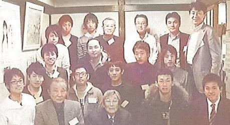

会員相互の親睦を図るとともに、高高野球部を物心両面で協力・支援することを趣旨とし毎年１～２月に定期総会・懇親会を開催しています。
2年前には元日本ハムファイターズの松家卓弘君（Ｈ13卒）が参加してくれたり、今年も衆議院議員の小川淳也君（Ｈ2卒）が多忙な中駆けつけてくれ、高高野球部時代の思い出話で大いに盛り上がりました。
最近は就活中の学生が、懇親会で若手ＯＢに就職相談をしている光景も見られます。
連絡網が不十分なため、まだ登録をされていない野球部ＯＢの方も多くいらっしやることと思いますが、入会ご希望の方は恐れ入りますが事務局までご連絡ください。
第31回東京玉翠会総会プログラム(2013.7)より
連絡先
ＯＢ会長 丸吉幸也(S24卒)
事務局 松野和彦(S53卒)matsuno@yd5.so-net.ne.jp

第1回大会に出場した10校が夢の対決！ 高高甲子園物語
第34回東京玉翠会総会プログラム(2016.7)より
高校野球100周年記念大会に出場へ
第33回東京玉翠会総会プログラム(2015.7)より